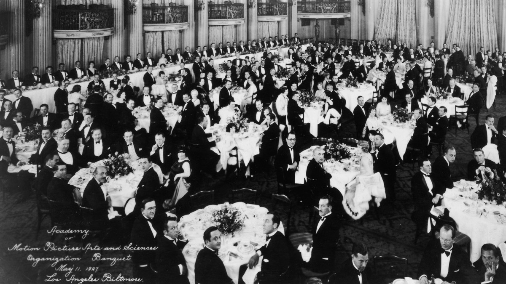

Historia Oscarów
Oscary, znane również jako Academy Awards, to jedne z najbardziej prestiżowych nagród w przemyśle filmowym na całym świecie. Przyznawane przez Amerykańską Akademię Sztuki i Wiedzy Filmowej (Academy of Motion Picture Arts and Sciences, AMPAS), mają na celu uhonorowanie najlepszych osiągnięć w filmie, w tym reżyserii, aktorstwie, scenariuszach, muzyce i wielu innych kategoriach.
Pierwsza gala odbyła się w 1929 roku w Hollywood, w małej sali hotelowej. Z czasem wydarzenie rosło w siłę, zyskując na popularności i przyciągając największe gwiazdy Hollywood. Co roku, w lutym lub marcu, tysiące ludzi na całym świecie śledzi transmisję na żywo, by dowiedzieć się, którzy twórcy zostaną uhonorowani złotą statuetką. Oscary mają na celu nie tylko nagradzanie twórców filmowych za ich wyjątkowe osiągnięcia, ale także zainspirowanie kolejnych pokoleń filmowców. Wierzy się, że wyróżnienia te mogą przyczynić się do promowania innowacyjności oraz różnorodności w kinematografii. Celem Akademii jest nie tylko honorowanie osiągnięć artystycznych, ale również podkreślenie znaczenia filmu jako formy sztuki, która może kształtować nasze społeczeństwo i kulturę.
